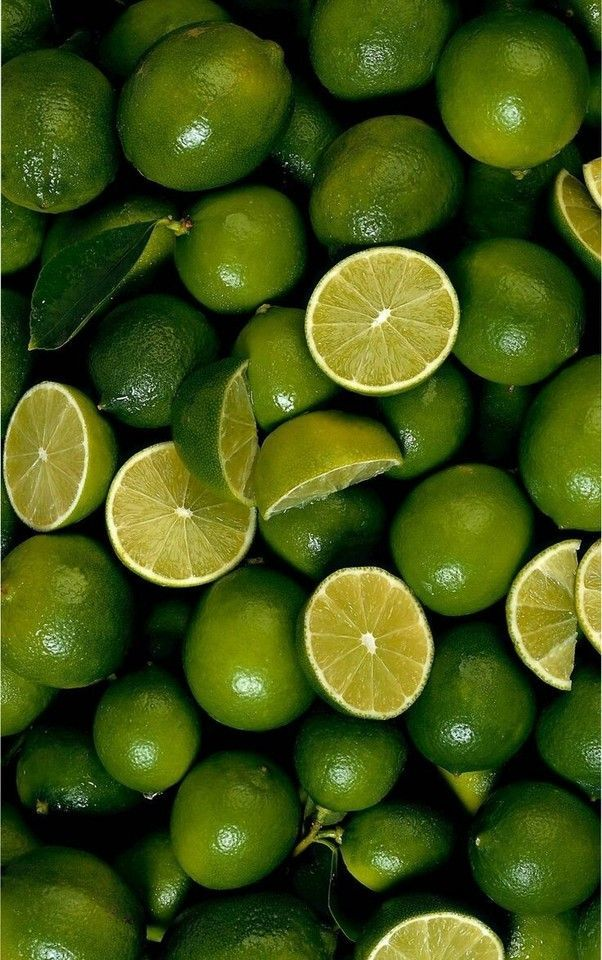
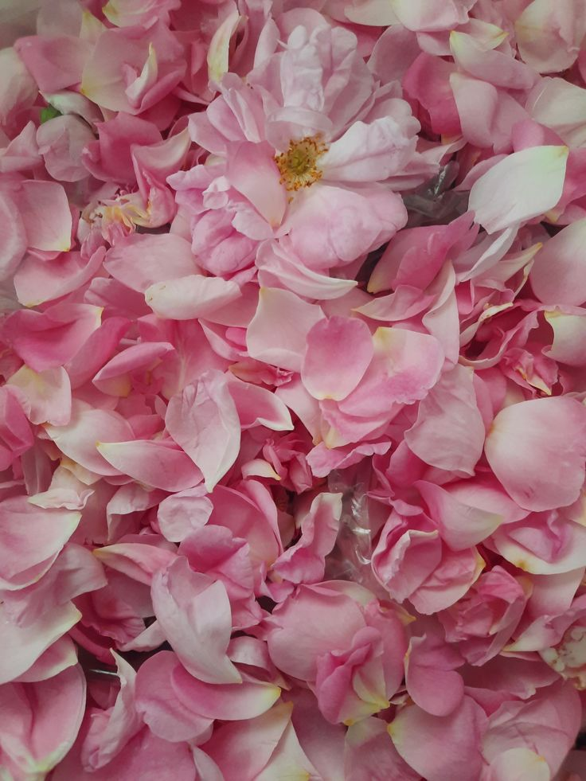
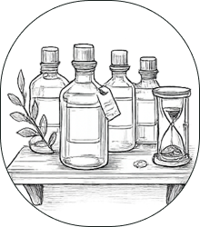

가장 먼저 피어나는 향
시트러스와 허브처럼 휘발성이 강한 원료가 첫인상을 만듭니다.
The Botany
산지부터 추출, 배치 검증까지 향을 구성하는 원료의 전체 생애주기를 투명하게 공개합니다.
Quality Snapshot
감성 설명을 넘어, 실제 선택에 필요한 핵심 품질 지표를 먼저 제시합니다.
Note Structure
Top · Middle · Base 세 층이 만드는 잔향의 깊이
시트러스와 허브처럼 휘발성이 강한 원료가 첫인상을 만듭니다.
플로럴과 스파이스 노트가 체온과 반응하며 본연의 분위기를 완성합니다.

우디와 머스크가 체온과 섞이며 24시간 이상 잔향을 이어갑니다.
Sourcing Principles
스토리가 아닌 운영 룰로 작동하는 르라보 원료 선별 기준
산지·수확 시점·추출 방식 이력이 연결되는 원료만 최종 후보로 채택합니다.
노트 편차를 배치별로 기록해 시즌이 달라도 향의 캐릭터를 안정적으로 유지합니다.
원료 스토리만이 아니라 실제 착용 상황(시간대/온도/장면)까지 함께 설계합니다.
Key Ingredients · 4 Anchors
르라보를 정의하는 핵심 원료 4종 · 산지에서 병까지의 여정
호주 대륙의 거친 자연에서 자라난 샌달우드는 부드러우면서도 깊은 울림을 주는 향의 뼈대가 됩니다. 수세기 동안 명상과 평온의 재료로 사용되어 온 르라보의 가장 상징적인 노트.
Best Context · Night / 15–20℃ / Formal

Batch BER-IT-2026-03이탈리아 칼라브리아에서 재배되는 베르가못은 시트러스의 상쾌함과 플로럴의 우아함을 동시에 품고 있습니다. 첫 향의 투명함을 결정짓는 르라보의 가장 정직한 탑 노트.
Best Context · Day / 20–28℃ / Office

Batch ROS-FR-2026-05새벽의 짧은 시간에만 수확되는 로즈 다마세나는 꽃잎 한 장 한 장이 향의 밀도를 결정합니다. 부드럽지만 결코 약하지 않은 플로럴의 원형.
Best Context · Daily / 16–24℃ / Smart casual
 Batch
CED-MA-2026-02
Batch
CED-MA-2026-02
바이올렛의 차가운 플로럴과 만나 스모키한 깊이를 만드는 시더. 산속 침엽수림의 공기를 한 번에 옮겨오는 체온 반응형 베이스 노트.
Best Context · Evening / 10–18℃ / Date
Forest Matrix
강도·지속력·계절 적합도·최적 장면을 한 줄에서 비교 — 향 선택 실패 확률을 줄여줍니다.
| Ingredient | 강도 (Sillage) | 지속 (Longevity) | 계절 | 최적 장면 |
|---|---|---|---|---|
| Sandalwood Santalum spicatum | F W Sp Su | Night · Formal | ||
| Bergamot Citrus bergamia | Sp Su F W | Day · Office | ||
| Rose Damascena Rosa × damascena | Sp Su F W | Daily · Smart Casual | ||
| Cedarwood Cedrus atlantica | F W Sp Su | Evening · Date |
강도(Sillage)는 향 확산 범위, 지속(Longevity)은 잔향 시간을 5점 척도로 표기합니다. 계절 표시는 권장 발향 환경 기준입니다.
Sourcing Process
검증된 산지에서 연구소의 병까지, 네 단계의 여정
 STEP 01
ORIGIN
STEP 01
ORIGIN
산지 선별과 파트너 인증을 통해 원료 편차 가능성을 사전 차단합니다.
최적 수확 창에서 필요한 만큼만 채집해 향 농도 손실을 최소화합니다.

STEP 03 EXTRACT저온 압착과 증류를 병행해 탑 노트 선명도와 베이스 잔향을 함께 확보합니다.
연구소 기준으로 배치 검수를 완료한 뒤 코드 기반으로 추적 가능하게 출고합니다.
Ingredient Standards
브랜드 톤을 넘어 운영 기준으로 공개하는 르라보의 원료 정책입니다.
출처가 불분명하거나 배치 이력이 연결되지 않는 원료는 조향 후보에서 즉시 제외합니다.
수확량 확대보다 생태 회복 주기를 우선해 장기적으로 안정적인 품질을 확보합니다.
최종 배치 코드를 기준으로 원료 단계까지 거슬러 올라갈 수 있게 추적 체계를 유지합니다.
FAQ
구매 전 가장 많이 묻는 원료 관련 질문을 기준 중심으로 답변합니다.
계절과 수확 시점, 기후(강수량·평균 기온)에 따라 원료의 자연 편차가 존재하기 때문입니다. 르라보는 허용 범위(±5%) 내 편차를 관리하고, 배치 코드를 통해 산지·수확 주차·조향사까지 이력을 추적합니다.
피부 타입마다 반응이 다를 수 있어 팔 안쪽 테스트(24시간)를 권장합니다. 고농도 원료 조합 향의 경우 사용량을 절반으로 줄여 시작하고, 레이어링 제품(바디 로션 등)을 먼저 사용해 피부 저항성을 높이는 것이 안전합니다.
산지-추출-배치 검증 단계를 코드 기반으로 관리하며, 내부 품질 기준(편차 4.7/5 이상)을 통과한 원료만 최종 병입에 사용합니다. 요청 시 배치별 원료 구성표와 검수 기록을 이메일로 발송해 드립니다.
모든 르라보 원료는 동물실험을 거치지 않으며, 동물성 원료를 일절 사용하지 않는 100% 비건 포뮬러입니다. 품질 검증은 조향사·소울 패널을 통한 인체 내성 테스트로만 진행됩니다.
미개봉 상태에서 24개월, 개봉 후에는 12개월 이내 사용을 권장합니다. 직사광선을 피해 15-20°C의 서늘한 공간에 보관하면 탑 노트의 휘발을 최소화하고 베이스 잔향의 안정감을 유지할 수 있습니다.
Find Your Scent
좋아하는 원료에서 시작해 르라보의 컬렉션을 탐색하세요